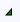

Printing Graphics
You can print your documents (symbols, graphics, templates, etc.) from the Graphics Editor. There are several views and panes that allow you to select what to print, how to format the printed copy and to preview the document before sending it to the printer.
Select the topic related to your task:
Align a Graphic on the Print Page
- You can specify how you want to align documents images on a printed page.
- On the Home tab, in Printing group, click Page Setup
 .
. - The Page Setup view displays.
- From the Alignment section, click one of the nine squares to specify the location of the image on the printed page.
- The Sample Graphic thumbnail is updated to display selected alignment.
- Click one of the following:
- OK – The selected alignment is saved and the Page Setup view closes.
- Apply – The selected alignment is saved; the Page Setup view remains open.
Customize the Header and Footer Fonts
- You are in the Page Setup window and you want to customize the fonts for the Header\Footer for your printed documents.
- As you make your selections in the Font Chooser window, the sample text in the Preview pane automatically updates to the selections made.
- On the Home tab, in the Printing group, click Page Setup .
- The Page Setup window displays.
- Click the expander arrow

to expand the Header and Footer section. - To change the header font, click Header Font.
- The Font Chooser window displays.
- From the Font Family drop-down menu, select a font.
- Enter a value for the font in the Size field.
- From the Color drop-down menu, select a font color.
- (Optional) Select the Bold and\or Italic check boxes to further format the text.
- Click OK when you are done.
- The font selections are saved and applied. The Font Chooser window closes.
Insert Headers and Footers
- You have a document (graphic, symbol, or template) open and you want to insert a header and or footer. You can set the Header and Footer fonts from the Font Chooser window.
- On the Home tab, in the Printing group, click Page Setup .
- The Page Setup view displays.
- Click the expander arrow of the Header and Footer section, and do the following:
- Click the Header and Footer check boxes, respectively, to enable as necessary.
- To add keywords to the header or the footer - Click in the appropriate field and position the cursor where you want to add a keyword. From the Keywords drop-down menu, select the keyword you want to add and click Insert. The keyword field is added to the field and a preview of it displays below. Repeat with as many keywords as necessary.
- To format the header text - Click Font next to the Header field. The Font Chooser window displays. Select the desired font settings for the text. Click OK. To format the footer text, click Font next and repeat the steps.
- To add images to header or footer - Click in the Header or Footer field and position the cursor where you want to add an image. From the Images drop-down menu, select the image you want to add and then click Insert. If you do not see the image you want to add, click Edit, and the Image Library displays. From here you can add more images to the drop-down menu.
Insert Page Numbers
You can add page numbers to your documents from the Page Setup view.
- On the Home tab, in the Printing group, click Page Setup .
- The Page Setup view displays
- Navigate to the Header or Footer field, and click to place the cursor in the correct position.
- The cursor is flashing in the correct position of the Header or Footer field.
- From the Keyword drop-down menu, select PageNumber, and then click Insert.
- The PageNumber field displays in the Header or Footer field.
Preview a Document to Print
- You have a document (graphic, symbol, or Graphic Template) open and you want to preview it before printing.
NOTE: You cannot print manual or automatic pages.
- On the Home tab, in the Printing group, click Preview
 .
. - The Print Preview window opens and the currently active documents displays.
- Click Print .
- The Print dialog box displays.
- Make your print selections, and then click Print.
Print Documents
- You have a document (graphic, symbol, or template) open and you have made any print or page setup selections, if necessary, from the Page Setup view.
NOTE: It is not possible to print manual or automatic pages.
- On the Home tab, in the Printing group, click Print
 .
. - The Print Progress bar shows the loading progress and then the Print dialog box displays.
- Make your selections and click Print.
- The document is sent to the printer.
Save Page Setup Settings
- You have made your selections in the Page Setup view and want to save the settings for future use. You can create a page setup (.xml) file from the Page Setup view.
- Navigate to the bottom of the Page Setup view, and click Export.
- The Save As dialog box displays.
- Enter a file name and click Save.
- Your selections have been saved and can be retrieved for future use to apply to other documents.
Work with Page Setup
The Page Setup view allows you to make selections that determine how your documents print.
- On the Home tab, in the Printing group, click Page Setup .
- The Page Setup view displays.
- Do one of the following:
- To use an existing set of selections from an existing page setup file (.xml), click Import and navigate to the appropriate file. Once selected, the file selections are applied to the Page Setup fields.
- Make new print setting selections, complete the fields in the Page Setup view.
NOTE: You can click Preview at any time to see the result of your selections applied to the actual document. - (Optional). Expand the Header and Footer section to add images or keywords to the header and footer.
- Do one of the following:
- To save your selections for future use, see Saving Page Setup Settings.
- Click Print.
Work with the Image Library Window
- You want to add or delete images from the Image Library, a repository which contains the images available to add to a header or footer.
- On the Home tab, in the Printing group, click Page Setup .
- The Page Setup view displays.
- Click the expander arrow to expand the Header and Footer section.
- The Header and Footer fields display.
- Click Edit.
- The Image Library displays.
- Click Import to navigate to the image you want to add. Repeat as needed. Each image added, is listed in the Images section. The highlighted image displays in the Preview pane. Click the Fill check box to have the image fill the Preview pane. To remove an image from the Images list, click Delete. The image is removed from the Images list.
- (Optional) Select an image from the Images list and click Copy. A copy of the selected image is sent to the clipboard. From the Images list, select an image whose data you wish to replace with the image data just copied to the clipboard, and click Paste. The image data of the selected image is replaced with the image from the clipboard.
- Click OK.
- The Image Library pane closes and the Images drop-down menu now lists the imported images.
Related Topics
For background information, see Printing in the Graphics Editor.
For a workspace overview, see the following: